os maiores artistas do mundo
Para ser considerado um dos maiores pintores da história é preciso possuir uma combinação especial de habilidades técnicas, pensamento criativo, originalidade e determinação. Combinados, todos esses atributos produzem excelentes obras que continuam a emocionar, algumas centenas de anos após sua criação inicial. Selecionamos uma lista com os 15 principais nomes – de acordo com Jessica Stewart, curadora e historiadora da arte que trabalha no My Modern Met -, levando em consideração todos esses fatores. Embora possam haver discordâncias em relação aos exemplos listados abaixo, não há como negar que os artistas selecionados causaram um impacto enorme na arte e cultura como as conhecemos.
Jackson Pollock trabalhando em seu estúdio em Long Island (1949) | Martha Holmes/The LIFE Picture Collection via Getty Image
indice
- Leonardo da Vinci (1452–1519)
- Michelangelo (1475–1564)
- Raphael (1482–1520)
- Artemisia Gentileschi (1593–C. 1656)
- Rembrandt (1606–1669)
- William Turner (1775–1851)
- Claude Monet (1840–1926)
- Mary Cassatt (1844–1936)
- Vincent van Gogh (1853–1890)
- Gustav Klimt (1862–1918)
- Pablo Picasso (1881–1973)
- Georgia O’Keeffe (1887–1986)
- Frida Kahlo (1907–1954)
- Jackson Pollock (1912–1956)
- Basquiat (1960–1988)
retratos
 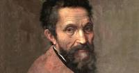
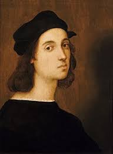
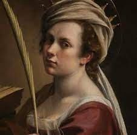
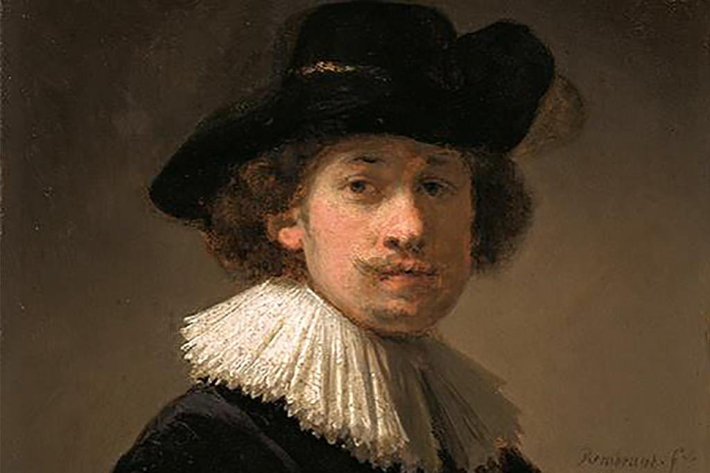
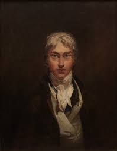
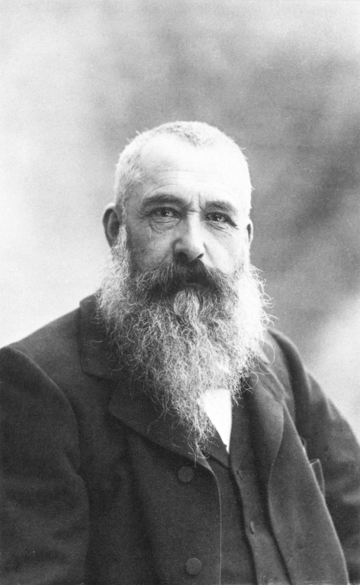
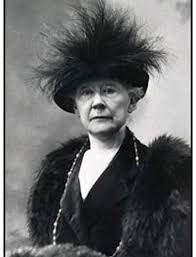
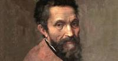
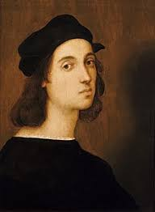
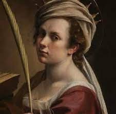
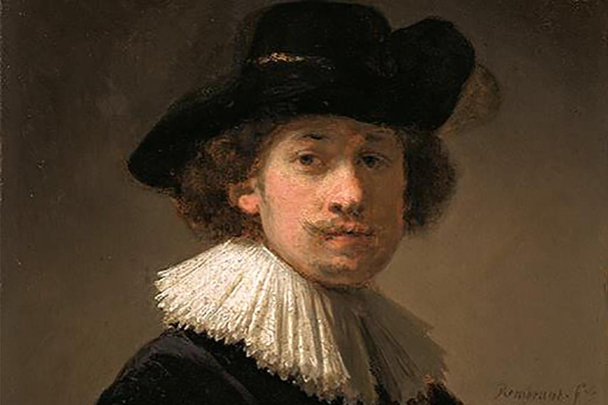
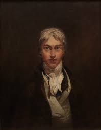
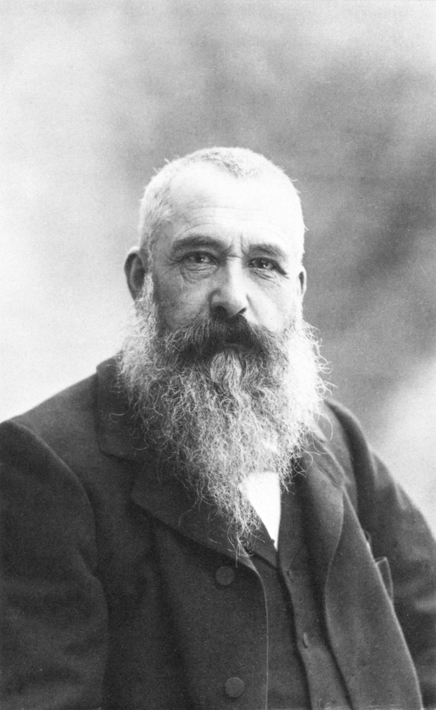
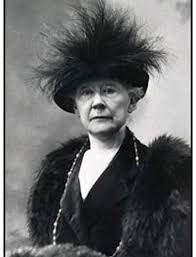
 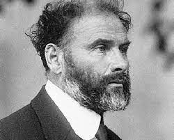
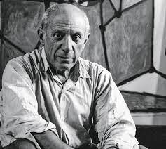
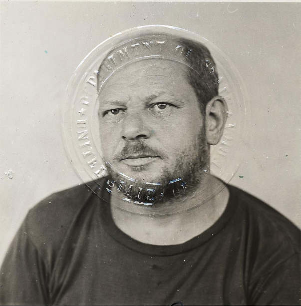
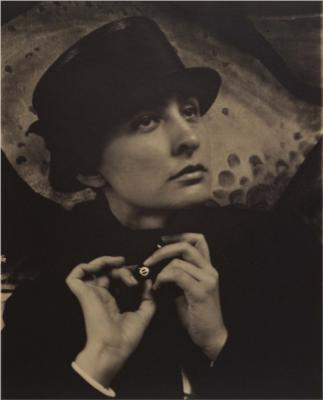
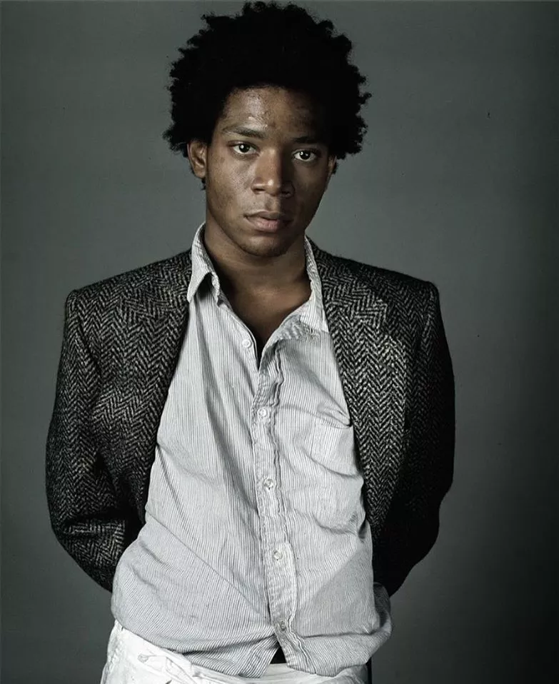
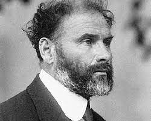
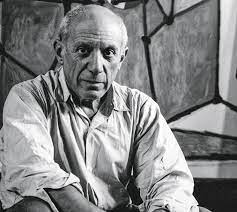
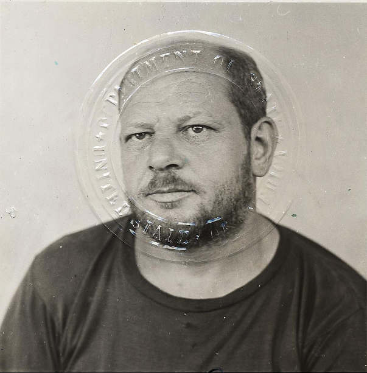
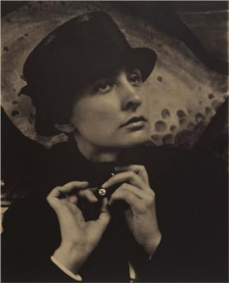
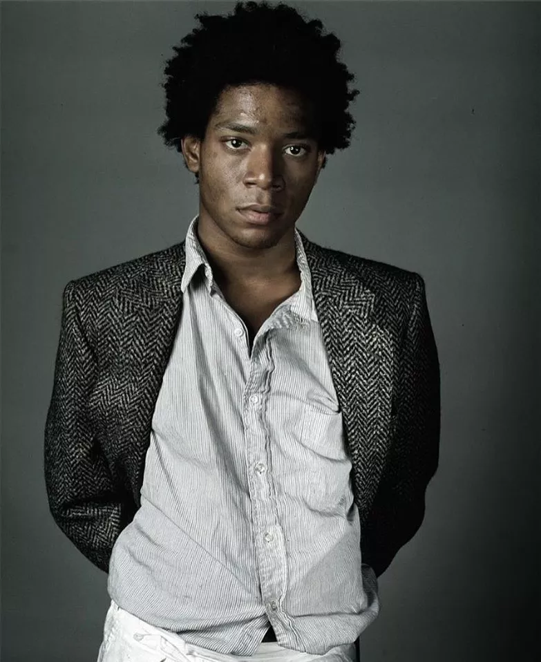